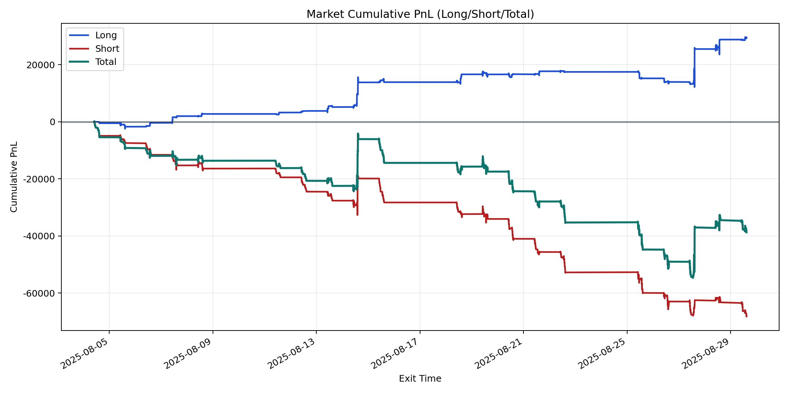
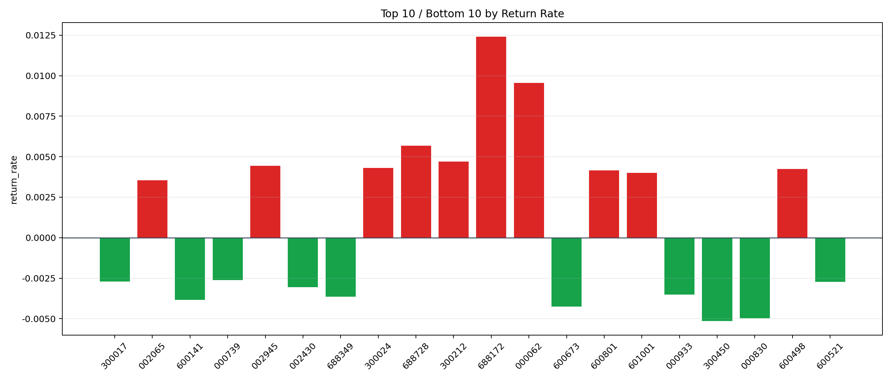

| repo_root | /home/haoranyou/data/output/alpha0.4_1w_5s_3ticks_index_filter/index_weights_500 |
|---|---|
| period_months | 1 |
| period_label | 2025-08-04_to_2025-08-29 |
| start_time | 2025-08-04 09:51:02 |
| end_time | 2025-08-29 14:45:27 |
| n_trades | 13135 |
| n_symbols | 119 |
| total_pnl | -38707.147099999944 |
| long_total_pnl | 29483.309500000043 |
| short_total_pnl | -68190.45659999998 |
| total_entry_notional | 122347581.0 |
| long_entry_notional | 31793713.0 |
| short_entry_notional | 90553868.0 |
| total_return_rate | -0.00031637035063243255 |
| long_return_rate | 0.0009273314349915672 |
| short_return_rate | -0.0007530374804088984 |
| top_symbols_by_return | ["688172", "000062", "688728", "300212", "002945", "300024", "600498", "600801", "601001", "002065"] |
| bottom_symbols_by_return | ["300450", "000830", "600673", "600141", "688349", "000933", "002430", "600521", "300017", "000739"] |

